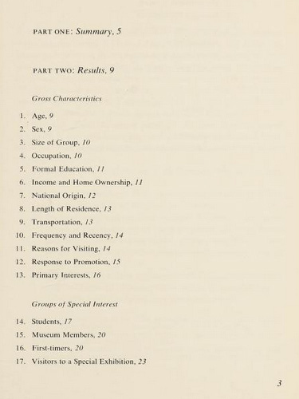
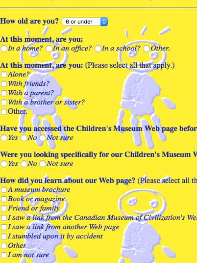
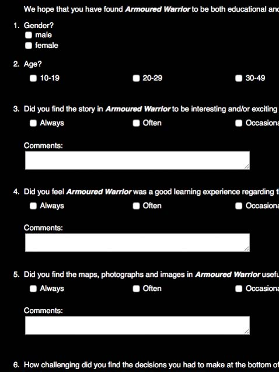

Museums Surveying Children Throughout History
Museums have made efforts to pay attention to the experiences of children visitors throughout history. Surveys began in the 1960s and continued into the Internet age. Surveys provide insight into the experiences of museum visitors, but there are sometimes gaps in reliability, as discussed in the examples below.
1960 Visitor Survey by the Royal Ontario Museum

In the early 1960s, the ROM began conducting visitor surveys. These surveys asked questions relating to age, gender, reason for visiting, and more. While the surveys provide insight into factors such as why students decided to visit the museum, gaps exist. One significant gap exists where the survey results state:
Children under seven or eight years of age were difficult to interview, and often their interviews could not be completed and hence were not included in the sample. View survey
1999 Online Visitor Survey by the Canadian Children’s Museum

In 1999, the Canadian Museum of Civilization Corporation had a dedicated site for the Canadian Children’s Museum.This section of the website included a survey for website visitors. The survey is directed at young children, as evidenced by the default age being “6 and under” and the second question asking whether the visitor is with their parent, friends, brother or sister, etc. The internet survey presents a different perspective from the ROM’s 1960s survey in that it is specially crafted for younger respondants. At the same time, the survey asks for the respondent’s personal information (eg. name, address), presenting potential ethical issues. The reality of the Internet means that there is no guarantee of the parental supervision that there is in an in-person museum visit; ethical issues arise in whether it is acceptable for a museum corporation to be asking children for their personal information. On top of ethical issues, reliability can come into question; there is no guarantee that information entered in an online form will be truthful.
2002 Canadian Children’s Museum Survey for Armoured Warrior Game

This survey, created to give feedback surrounding an online game that is discussed in the following exhibit, asks specific questions regarding the experience of the game. The survey sets the respondant’s age at a minimum of 10–19 years, making the assumption that anyone younger would not be playing the game. Such an assumption exlcudes the possibility of knowlingly hearing from children under the age of 10.